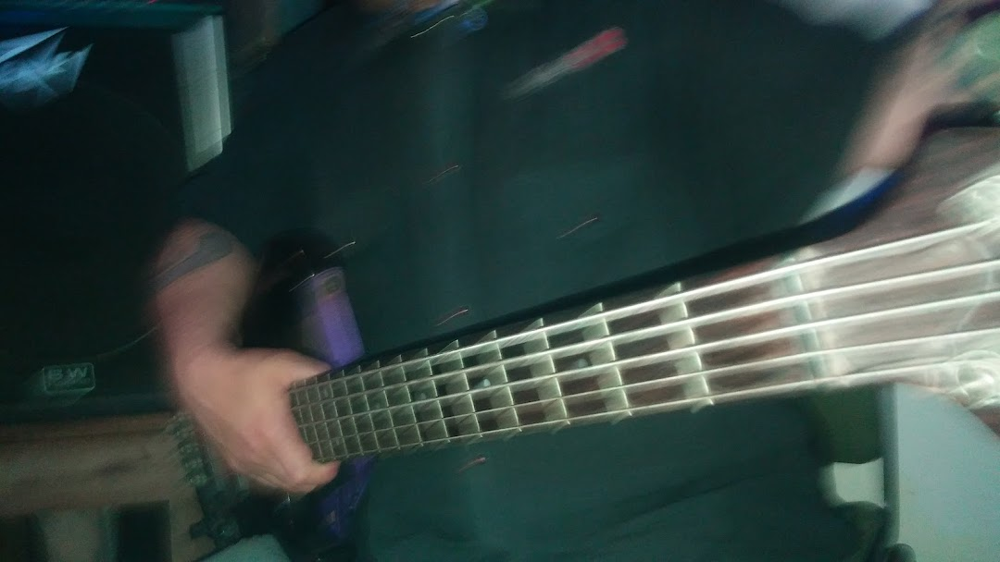
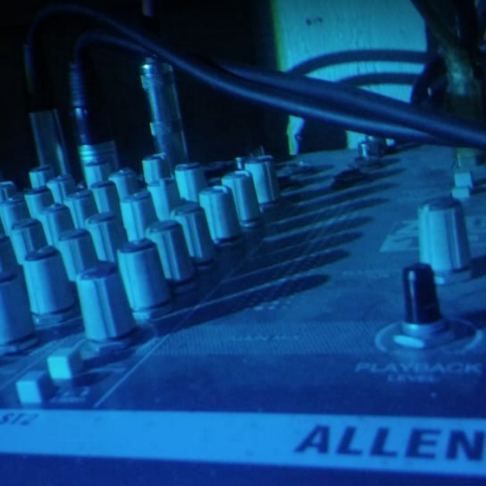
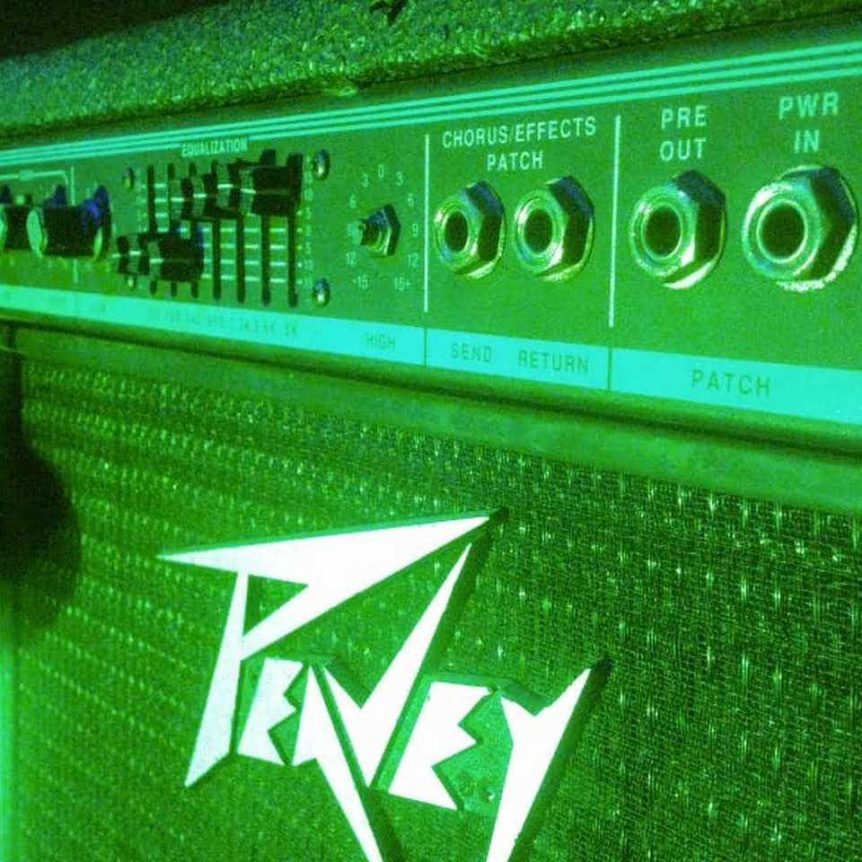
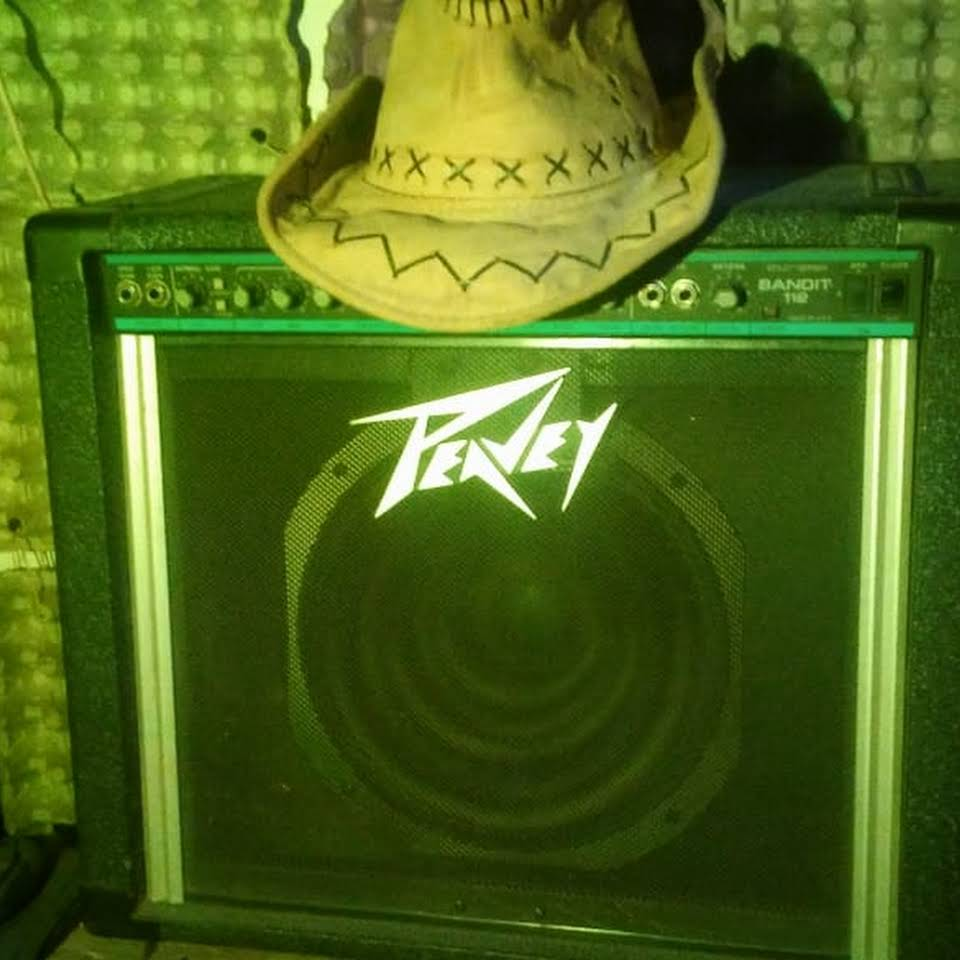
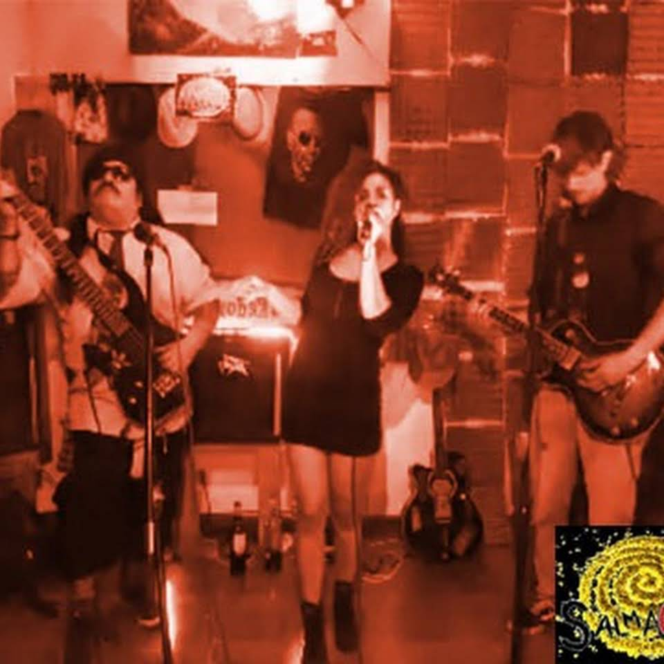

Sala de ensayo Salmarina
Sala de ensayo totalmente equipada en Bernal

La sala por dentro

Consola Allen&Heath 10 Canales equalizador 3 bandas con ajuste de frecuencia de medios.

BAJO: Peavey TKO80 80Watts ecualizador parametrico de 9 bandas, compresor y loop de efectos.

GUITARRA: Peavey Bandit112 2 Canales, limpio y distorsion super versatil, Reverb y loop de efectos.

Transmisiones en vivo multicamara con sonido de consola.
Nuestra sala cuenta con equipos profesionales de primeras marcas:
Peavey - Allen&Heat - Shure - Samson - Mapex
Contamos con servicio de bar y WIFI
Sala Salmarina
Reservar ahora!
Abrimos todos los dias de 15 a 24hs
Nos encontramos en Bernal a pocas cuadras de la estacion de tren.